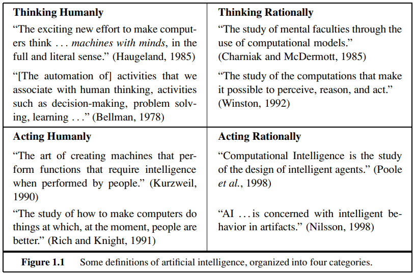

As technology continues to grow and change businesses, AI, especially in customer service, is becoming more common. A big step forward is the development of empathetic AI. This kind of AI is designed to recognize and respond to human emotions, bringing a new level of customer service. This new technology has lots of benefits like making things more efficient and improving customer satisfaction. But there are also important risks to think about, such as a lack of real human interaction and worries about customer privacy. As well as unemployment and system malfunctions
The first risk to think about is a lack of real, human interaction. Empathetic AI tries to act like a human by recognizing and responding to emotions, which is supposed to create a more personal experience for customers. This comes from the idea that an interaction that feels more human can help make customers happier. But even with this goal, AI systems can't fully provide the detailed and specific responses that real people can. While the technology is impressive, it can't replace the real human element of the emotional intelligence that creates empathy.
These AI systems can't fully understand or adjust their responses to subtle emotional signals or different emotional situations. Because of this, interactions might seem fake or scripted, leaving customers feeling less satisfied. So the idea of a 'personalized experience' might not be as personal as it sounds because it doesn't have the real warmth, understanding, and connection of human interaction.
Additionally empathetic AI, although designed to recognize and respond to emotional signals, doesn't have the same level of understanding or ability to adjust its responses like a human does.
It can't fully copy the complex world of human emotions, the subtleties, and the ability to truly empathize.
As a result, using empathetic AI in customer service could make customers feel misunderstood or not valued.
This could then hurt the business's reputation and customer loyalty, leading to losses (Rust & Huang, 2014).

An example of a turing test to demonstrating it needs think humanly in order to true AI and would pass as a human.
Source: Artificial intelligence a modern approach. Pearson Education, Inc..
The second big risk is about customer privacy. Empathetic AI works by collecting, processing, and interpreting a lot of data. This includes data, like a customer's name and account details, emotional states, ways of communicating, and personal preferences.
As businesses become more focused on data, customers are becoming more worried about their privacy. If personal data is handled poorly, misused, or accessed without permission, it can really hurt the trust between the customer and the business, leading to harm to the business's reputation and even possible legal problems (Martin, 2019). The data collected by empathetic AI systems could be taken advantage of by dishonest people, potentially leading to serious issues like identity theft or financial fraud. Because of this, it's important for businesses to have strong data protection measures and clear, understandable policies about how data is used to help reduce these risks.
Because artificial intelligence is capable of doing their assigned job right, companies may wonder if they should keep human workers that they have to pay for (Nilsson et al., 1984). They may think that it's better to replace them instead so that they wouldn't have to pay their workers and so they can also put that money to other things. The company would stand to gain profit from it, with efficient AI that can do their jobs basically for free, at the cost of human workers. Of course this is a problem, and this concern is already in people who are aware of the AI's capabilities. Russell, S. J. (2010) believes we may end up in a future where unemployment is high, but even the unemployed serve as managers of their own cadre of robot workers
Artificial intelligence is not perfect. There will be times where the AI will have its errors and/or malfunctions. If this occurs at all, this can negatively impact customer service. When the customer wants something, but the AI breaks down, they'd have to call again. If they're stuck with the AI that cannot actually give them what they want and it gets worse, if there's some sort of waiting time the customer has to go through before reaching someone. If the waiting times are also rather long, the customer can get impatient and give up on calling again. Incorrect responses can happen, data somehow missing from the AI, or at its worst, the AI is completely unresponsive to the customer. These sorts of things will be annoying, and for short-tempered customers, will absolutely be infuriating. This will surely negatively impact the company's customer service.
This page was originally the responsiblity of Cyrus Jayden, however ultimately it was written by both Jack and Joshua and coded by Jack.
Made 1 March 2021thanks to W3C for tutorial and adapted code from Style Examples
also thanks to WDN for HTML and CSS resources and any adapted code snippets from Mozilla Developer Network